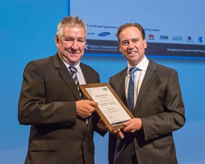
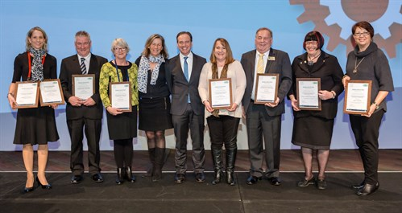

LATEST NEWS
Alexandrina Council Wins Top State Recycler in MobileMuster's Awards
Posted June 17, 2015
Alexandrina Council was announced today as the State’s Top Collector for South Australia in MobileMuster’s Local Government Recycling Awards.
Presented by The Hon Greg Hunt MP, Minister for the Environment in Canberra at the National General Assembly of Local Government, Alexandrina Council received their award for encouraging their local community to recycle over 75 kg of old and unused mobile phones to become MobileMuster’s Top Collector in South Australia.

Electronic waste is one of the faster growing waste issues in Australia and industry and government need to work together to deliver tangible and simple solutions.
“The long term partnership between the mobile phone industry’s recycling program MobileMuster and local councils to help people recycle their old mobiles is a fantastic example of how industry and local government can work together to deliver real social and environmental benefits to our communities” said Minister Hunt.
Image credit: Mayor Dave Burgess, Mid Murray Council and President of the Local Government Association of South Australia accepting the Award from the Hon Greg Hunt MP, Minister for the Environment on behalf of Mayor Keith Parkes, Alexandrina Council.
Mayor Keith Parkes of Alexandrina Council said, “We are committed to the environment and to reducing e-waste to landfill. We are honoured to be recognised by MobileMuster for making it easy for our local community to recycle their old and unused mobile phones.”
Rose Read, Recycling Manager, MobileMuster, said, “We proudly recognise the exemplary work of Alexandrina Council in working with us to fulfil our promise to keep old mobiles and accessories out of landfill. Without the support of councils, like the Alexandrina Council MobileMuster wouldn't be the successful recycling program it is today.”
“Councils play a major role in educating and making it easy for residents to recycle their old mobile phones. In the 12 months to April 2015, local councils diverted over 3,300kgs of mobiles, batteries, chargers and accessories from landfill and over the past 10 years have collected over 25,600kg mobiles and accessories for recycling,”
MobileMuster, Australia’s only government accredited, not-for-profit mobile phone recycling program is proud to be celebrating 10 years of working with local councils in promoting and collecting mobile phones for recycling. MobileMuster partners with over 300 councils across Australia to help divert thousands of tonnes of non-renewable resources out of landfill and back into the economy every year.
MobileMuster’s recycling awards, which have been running since 2007, acknowledge the great support received from local government in ensuring the industry keeps its promise; that mobile phone products don't end up in landfill and are instead recycled in a safe, secure and ethical way.

Alexandrina Council was awarded alongside seven other councils in the awards ceremony within the following categories:
- National Excellence Award - District Council of Mount Barker
- National Top Collector (kg) - Brisbane City Council (Qld)
- National Top Collector per Capita - Shire of Trayning (WA)
- State Top Collector (kg) – New South Wales - City of Sydney
- State Top Collector (kg) – Queensland - Brisbane City Council
- State Top Collector (kg) – Western Australia – City of Stirling
- State Top Collector (kg) – Tasmania - Burnie City Council
- State Top Collector (kg) – Victoria - Nillumbik Shire Council